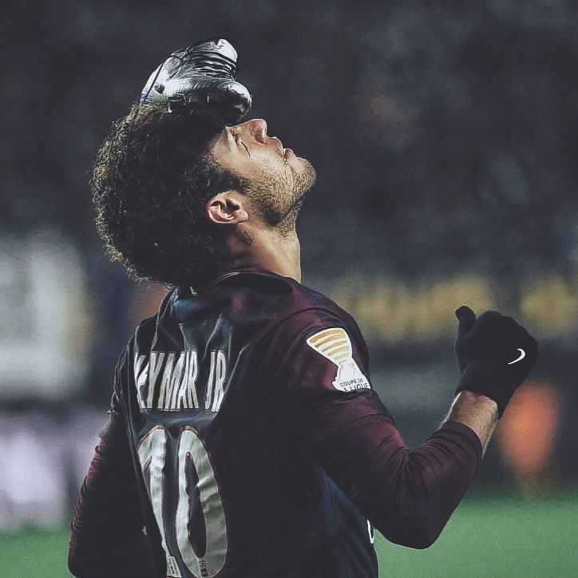

intro
A 17 years old 2d game dev and a frontend developer. Whether it's creating super cool games from scratch or developing browser extensions that make everyday tasks easier,I enjoy turning ideas into things people can actually use. When I'm not coding, you'll probably find me playing football, watching anime, or doing too much doomscrolling.
Based in India. Usually .
work!
All the things that i have crafted or coded.
you can see all my work here →off the clock